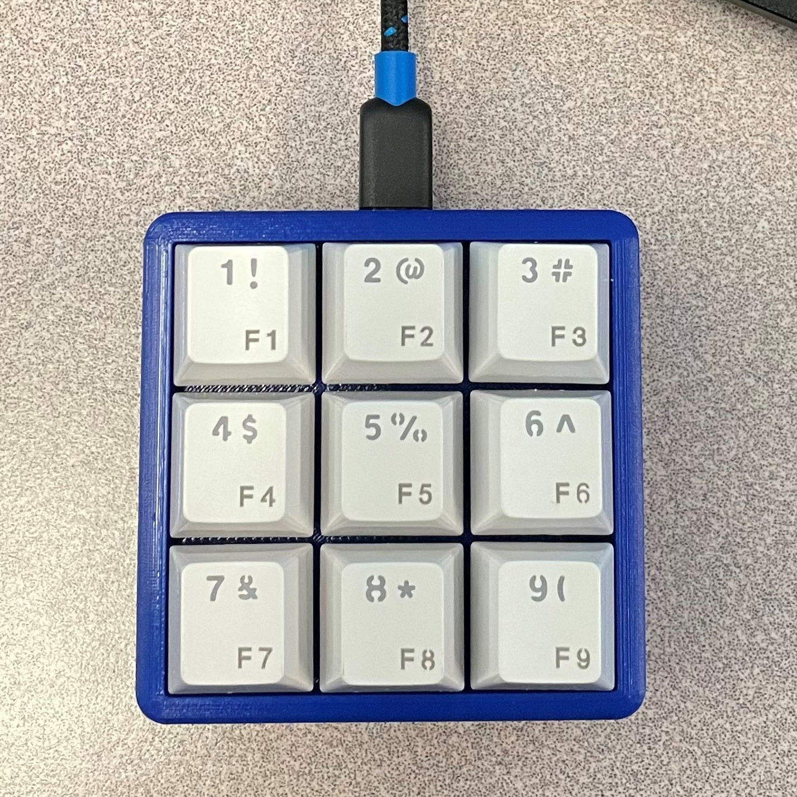
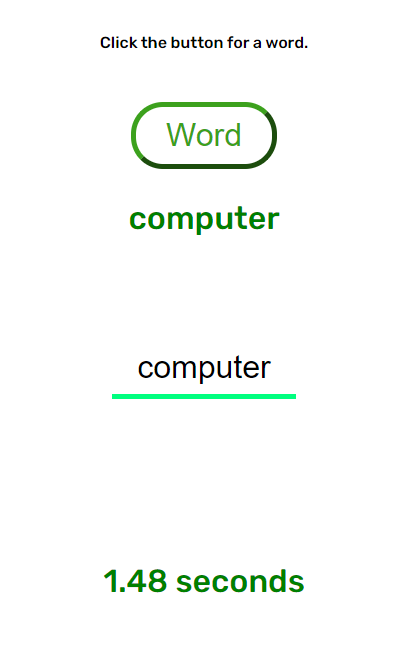
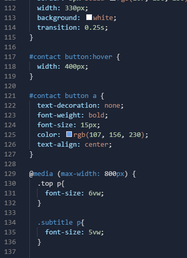

C++ Chromakey
Implemented chromakey (greenscreen) technology with small bitmap images in C++. Code finds an automatic threshold value when scanning the image, which ensures highest quality image projection regardless of any variation or imperfections in the files.
Note: I cannot post my code to GitHub due to academic integrity rules, but I can show my code privately upon request.
Optical Character Recognition Project
I made this computer vision project for my CSCI 103 class at USC. In C++, I first made a class called BigInt, which can store numbers larger than the maximum value of a C++ int variable (8 bytes). Then, I used a breadth first search algorithm to scan bitmap images of characters and accurately transcribed each digit from the image into an instance of the BigInt class. Then, using operator overloading, I allowed adding and subtracting of BigInts (see video for a quick demo).
Note: I cannot post my code to GitHub due to academic integrity rules, but I can show my code privately upon request.
Raspberry Pi Pico Keypad
This keypad utilizes a Raspberry Pi Pico to send keyboard inputs. Keypad macros are fully programmable and customizable. I 3d printed the case, and used generic key switches and keycaps.
Python Code
Track and Field Timer

I created this large stopwatch timer for my high school's track and field team. The timer utilizes a foot pressure sensor and laser tripwire as start and stop buttons. This device contributes to a better experience for both spectators and the athletes.
Arduino Code
EncryptoC - Password Encryption
Encryption software for storing passwords safely. My encryption uses varied techniques to ensure the encrypted strings are as indecipherable as possible without access to the decryption executable. This encryption only works on passwords containing 20 characters or less.
Typing Challenge
This typing game was created using HTML, CSS, and JavaScript. In the future, I want to set up a server and add a public leaderboard to the game using Node.js and MongoDB.
Word Type Test
Tutoring Site
 Benicia TutoringThis is the website I made for my tutoring service. I collaborated with some students to form an organization of high school tutors. Customers can use this website for information about us.